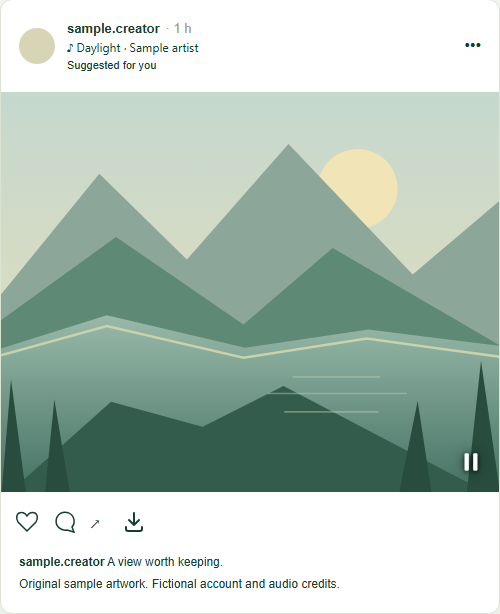
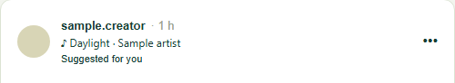
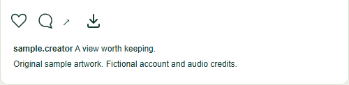
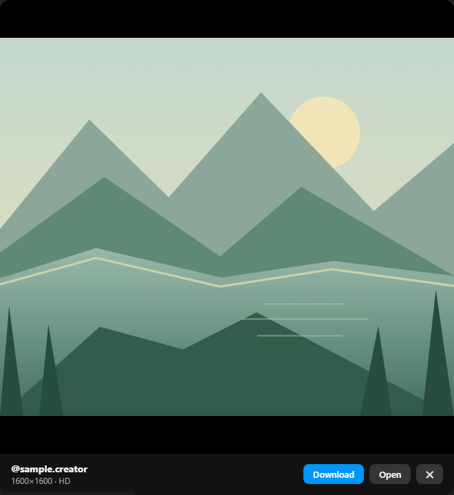

Photos.
With sound.
Photo-post music, full-size profile photos and media downloads for Instagram on your desktop.
Free. Manual installation for Brave, Chrome & Edge.
This extension needs a desktop browser. Open this page on your computer to install it.
Open source. No analytics.
No extra account to create.

Fictional account, audio credits & original sample artwork.
Right where you scroll
Let the photo play
Music starts with the photo in focus. Scroll to the next post and its soundtrack takes over. Leave the post or hide the tab, and playback stops.
Song and artist credits sit below the author. Pause or adjust the volume whenever you like.

Save the slide you see
Download a photo, video or story from its own controls. In a carousel, the download follows the slide you’re viewing.
Files come from the original media servers, in the best version available to your session.

A closer look
Open a profile photo at full size. View it, open the image directly or save a copy from the built-in viewer.
IG Tools only works with content your session can access. Private accounts stay private.

Make it yours
Download from GitHub and load it into your browser. There’s no Chrome Web Store listing yet.
Download extension, small ZIP download
Desktop Chromium 116 or newer.
First, unzip the download
Extract the ZIP into a permanent folder. Keep that folder after installation; your browser loads the extension from there.
Open your extensions
Copy this address and paste it into your browser’s address bar.
brave://extensionsLoad the folder
Enable Developer mode, choose Load unpacked and select the folder containing
manifest.json. Reload Instagram and you’re ready.
Your feed stays yours
IG Tools runs in your browser. It has no analytics, ads or developer servers. It reads data the page already loads and can request details for one post at a time from Instagram.
Media loads directly from the original servers. Music and downloads use data; temporary caches are bounded, and playback releases its source when it stops.
The project is independent and unofficial. It doesn’t bypass access restrictions, and downloading a file doesn’t grant rights to reuse it.
Before you install
Why is installation manual?
The extension is currently distributed on GitHub. Download the ZIP and use Developer mode to load it. A normal website cannot silently install a browser extension.
How do I update it?
Download the latest ZIP and replace the files in your installation folder with its contents. Click Reload on the extension card, then refresh Instagram. Manual installations don’t update themselves.
How do I remove it?
Open your browser’s extensions page and click Remove on IG Tools. You can then delete the extracted folder.
Is this affiliated with Meta?
No. IG Tools is not affiliated with, endorsed by or sponsored by Instagram or Meta. Respect copyright, privacy and the site’s terms when using it.
What if something stops working?
Instagram changes its website regularly, so features can break. Check the GitHub issue tracker for known problems or report one without sharing passwords, tokens or private content.